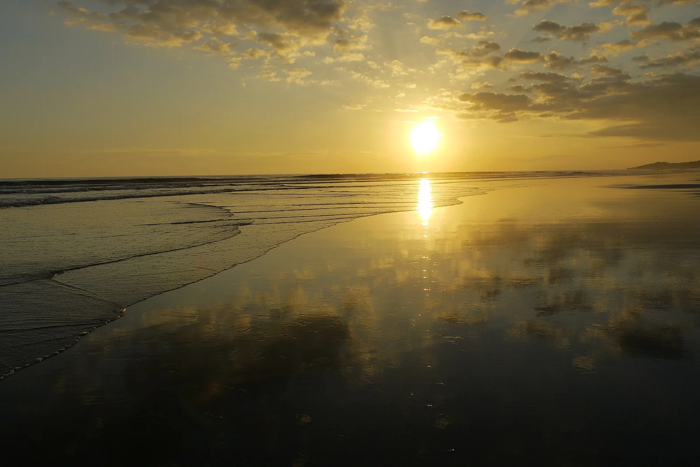

Playa Esterillos
Puntarenas, Costa Rica · surf

Un ensemble de plages de la côte Pacifique centrale. Esterillos figure parmi les secteurs de surf du Costa Rica.
- Lieu
- Puntarenas, Costa Rica
- Niveau
- Variable selon les conditions
- Activités
- surf
- Type d'eau
- Mer / océan
- Coordonnées
- 9.53, -84.49 (position approximative du secteur)
Ouvrir dans Ocean Buddy Télécharger sur l'App Store
Source : Visit Costa Rica.